السلسلة 16
السيارة (صنف B) · 40 سؤال. كل سؤال فيه الصورة والصوت. اختار الجواب (ولا جوج إلا كانو صحاح)، ورك على «تأكيد» باش تشوف واش صبتي.
- 40سؤال
- 32باش تنجح
- 1 – 4جواب واحد ولا أكثر
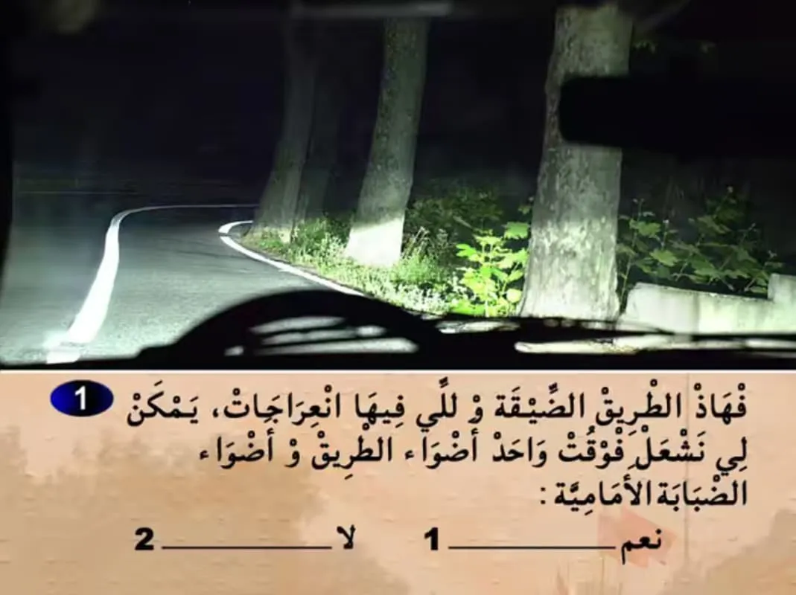
الكلافيي: 1–4 للجواب، Enter للتأكيد وللسؤال الجاي.
السلسلة 16 · النتيجة ديالك
0 / 40
السلسلة 16
السيارة (صنف B) · 40 سؤال، بالصوت، مع الجواب الصحيح والشرح.
السؤال 1
بيّن الجواب
الجواب الصحيح: 1
عندما نتواجد في طريق ضيّقة وتحتوي على إنعراجات كثيرة فنقوم بتشغيل أضواء الضباب لكي يظهر لنا جنبات الطريق، لكن إذا كان فقط منعرج واحد فلا نقوم بتشغيله، في هذه الحالة إذن نقوم بتشغيل أضواء الطريق وأضواء الضباب الأمامية.
السؤال 2
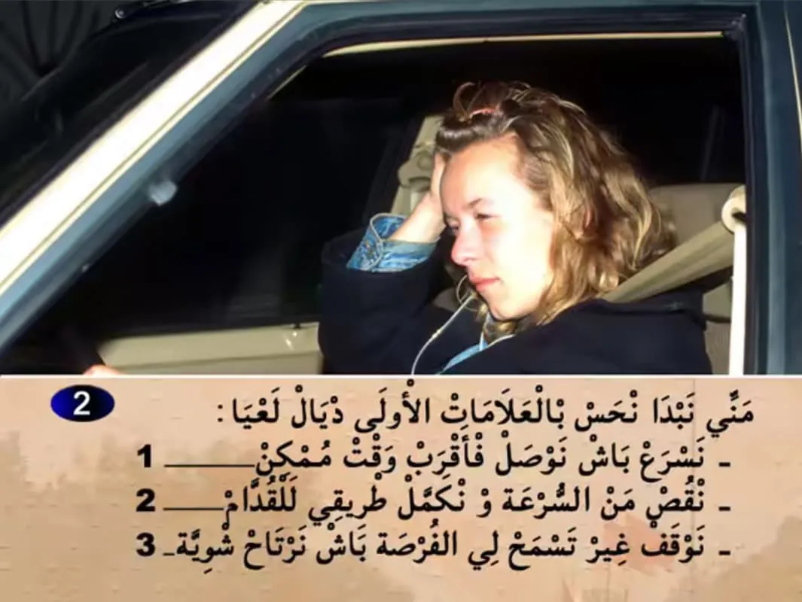
بيّن الجواب
الجواب الصحيح: 3
لا يوجد شيئ في السياقة يقول يجب عليّ أن أسرع لكي أصل بسرعة، القانون يقول أنه بعد كل ساعتين على الأقل من السياقة فيجب عليّ أخد إستراحة تقدّر ب 15 دقيقة. إذا في هذه الحالة إذا شعرت بالتّعب فيجب عليّ الوقوف في أقرب مكان مسموح به الوقوف أو التوقف وأقوم بأخد إستراحة وإكمال السير بعد ذلك.
السؤال 3
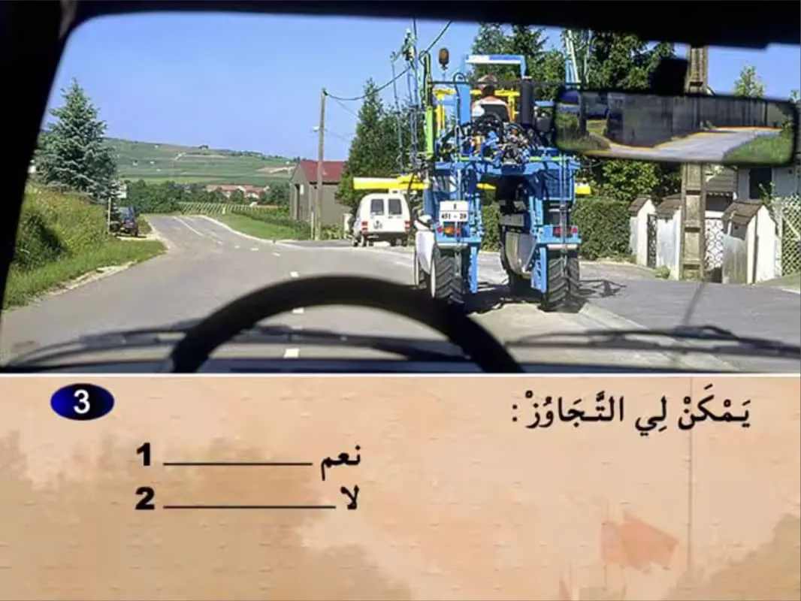
بيّن الجواب
الجواب الصحيح: 1
العربة تسير بسرعة بطيئة كما أن التشوير الأفقي الخط المتقطّع يسمح لي بالتّجاوز، كما أنه لا توجد سيارة قامة في الإتجاه المعاكس ولا توجد سيارة تستعد لتجاوزي، إذن يمكنني في هذه الحالة التّّجاوز.
السؤال 4
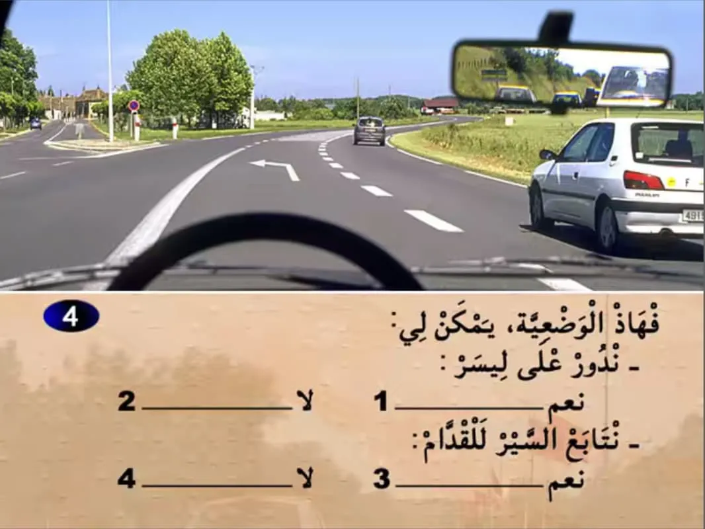
بيّن الجواب
الجواب الصحيح: 1 و 4
في هذه الحالة التشوير الأفقي السّهم المرسوم على الأرض فهو يجبرني على الإنعطاف إلى اليسار ولا يمكنني متابعة السير مباشرة، للسير مباشرة يجب أن أتواجد في المسلك الموجود على اليمين.
السؤال 5
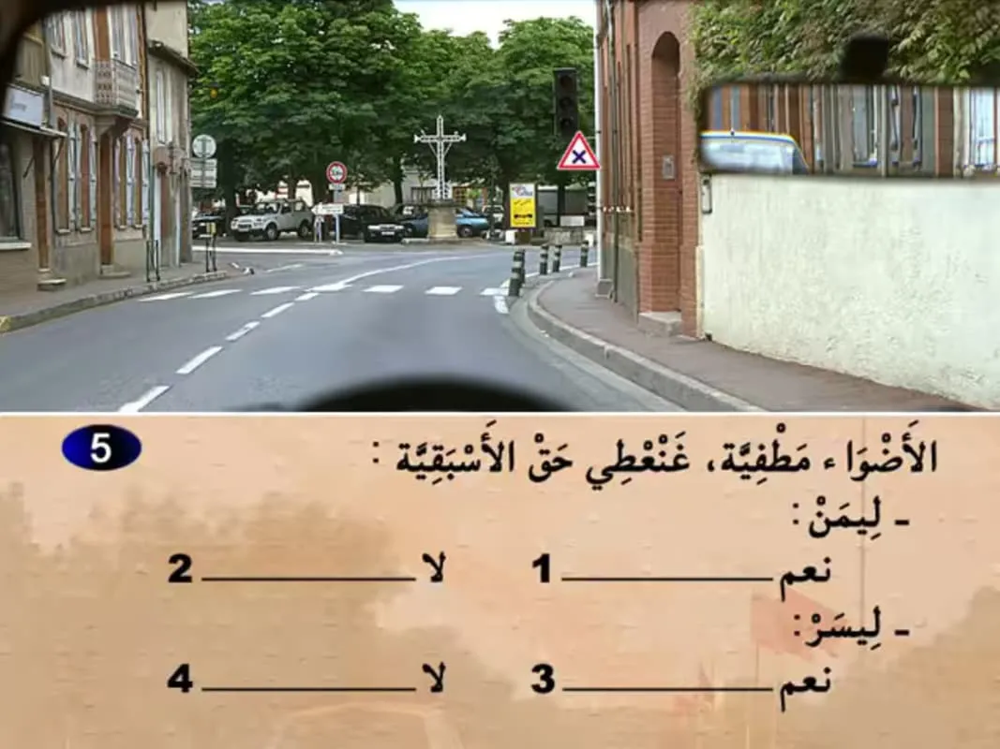
بيّن الجواب
الجواب الصحيح: 1 و 4
بما أن الإشارات المرورية الضوئية لا تشتغل ففي هذه الحالة نقوم بتطبيق الإشارات المرورية الأخرى، لدينا إشارة مرورية تعني الخطر ووجود ملتقى الطرق، إذن في هذه الحالة نقوم بتطبيق القاعدة العامة والتي تقول الأسبقية للعربات القادمة من اليمين، وليس لليسار. أعطي حق الأسبقية للعربات القادمة من الجهة اليمنى ولا أعطي حق الأسبقية للعربات القادمة من الجهة اليسرى.
السؤال 6
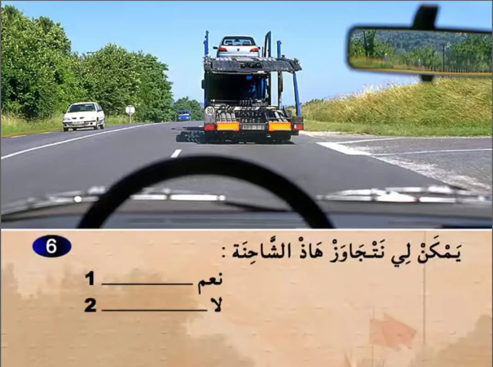
بيّن الجواب
الجواب الصحيح: 1
الطريق الخاصة بنا تحتوي على مسلكين، التشوير الأفقي الخط المتقطّع فهو يسمح لنا بالتجاوز، كما أنه لا توجد عربة تستعد لتجاوزنا، إذن يمكنني تجاوز هذه الشاحنة.
السؤال 7
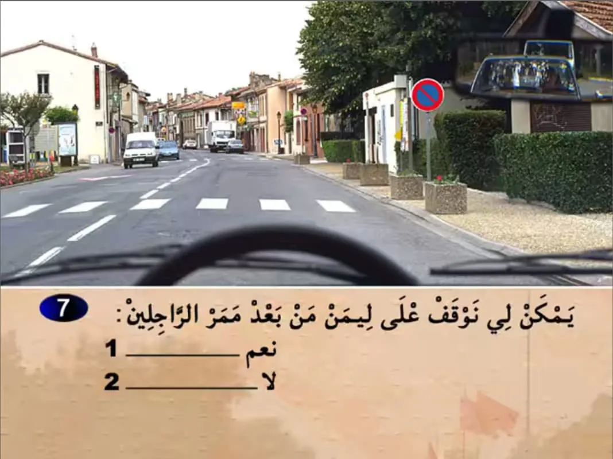
بيّن الجواب
الجواب الصحيح: 1
بالنسبة للعلامة الطرقية فهي تمنع التوقّف وليس الوقوف، إذن يمكنني الوقوف على اليمين بعد ممر الراجلين.
السؤال 8
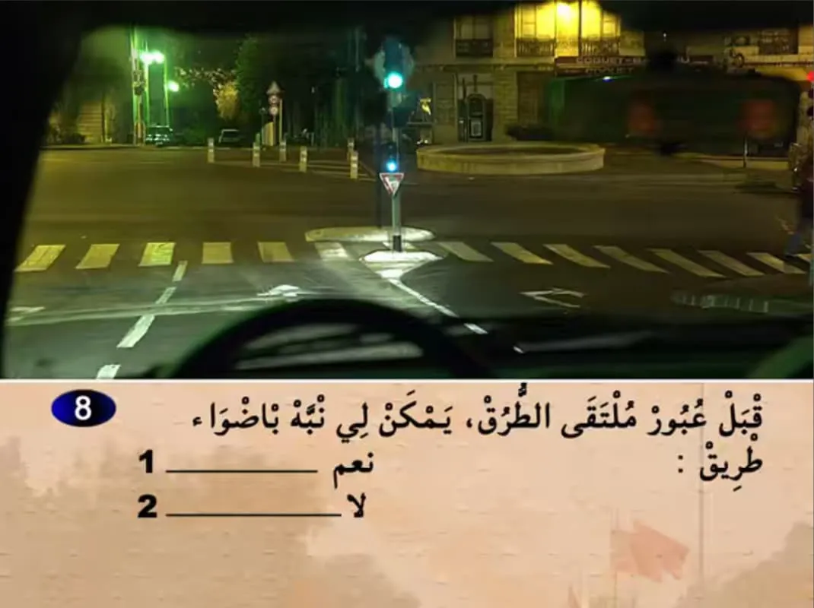
بيّن الجواب
الجواب الصحيح: 1
نتواجد في الليل، بالرغم من أن الضوء أخضر فيجب علينا الإنتباه عند المرور لأننا نتواجد في ملتقى الطرق، كما أنه بإمكاننا التنبيه بأضواء الطريق قبل المرور.
السؤال 9
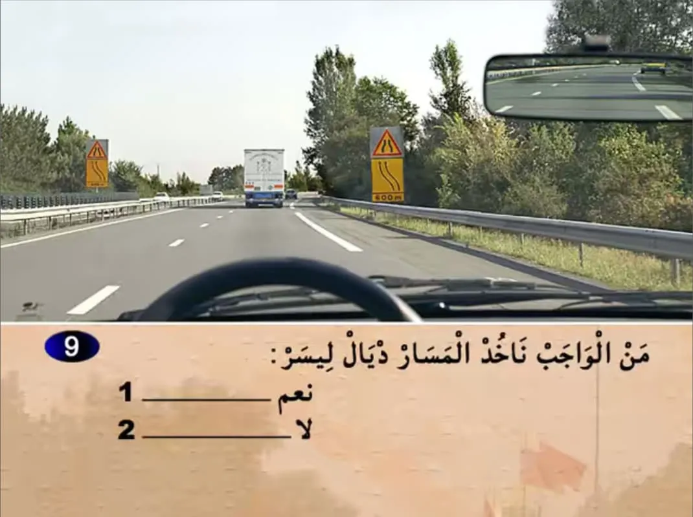
بيّن الجواب
الجواب الصحيح: 2
العلامة الطرقية الصفراء والتي هي مؤقتة فهي تشير إلى أن الطريق سوف يتغيّر إتجاهها قليلا نحو اليسار، ليس الان على بعد 600 متر. لذلك ليس من الواجب عليّ الان السّير في المسلك الموجود على اليسار لأن العلامة الطرقية لا تجبرني على ذلك.
السؤال 10
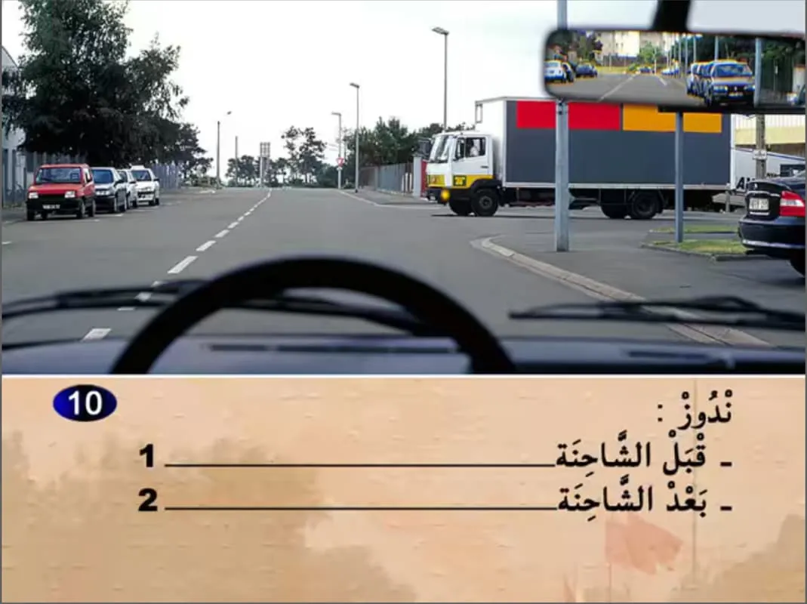
بيّن الجواب
الجواب الصحيح: 2
في ملتقى الطّرق فالأسبقية وعندما لا توجد علامات تنظّم حركة المرور فدائما العربات القادمة من الجهة اليمنى لديها حق الأسبقية، إذن في هذه الحالة يمكنني المرور بعد الشاحنة.
السؤال 11
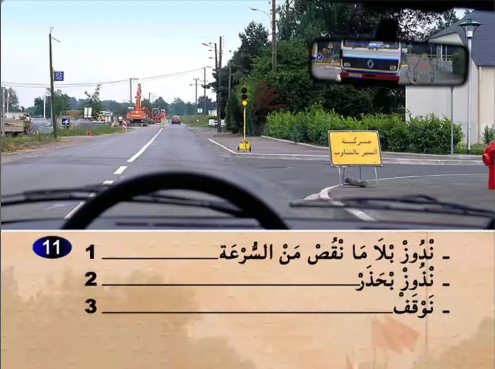
بيّن الجواب
الجواب الصحيح: 2
العلامة الطرقية (حركة السير بالتناوب) فهي تعني أشغال والضوء عند وجود الضوء البرتقالي رفراف في هذه الحالة يجب علينا المرور وبحذر. (الإنتباه والمرور).
السؤال 12
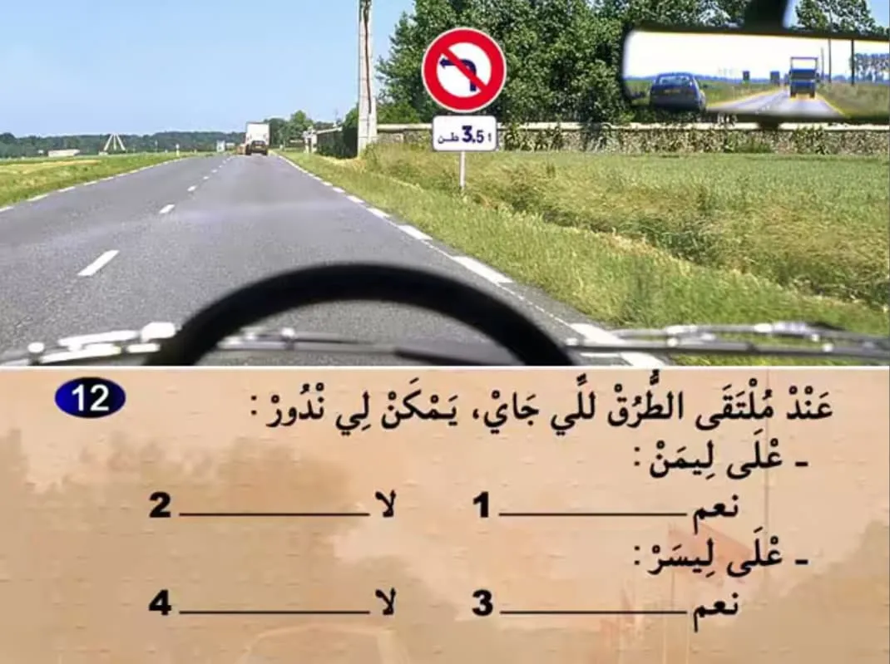
بيّن الجواب
الجواب الصحيح: 1 و 3
بالنسبة للعلامة الطرقية فهي تعني ممنوع الإنعطاف لليسار لكنّها تخص الشاحنات 3.5 طن، إذن في ملتقى الطرق القادم يمكنني الإنعطاف إلى اليمين وكذلك يمكنني الإنعطاف إلى اليسار.
السؤال 13
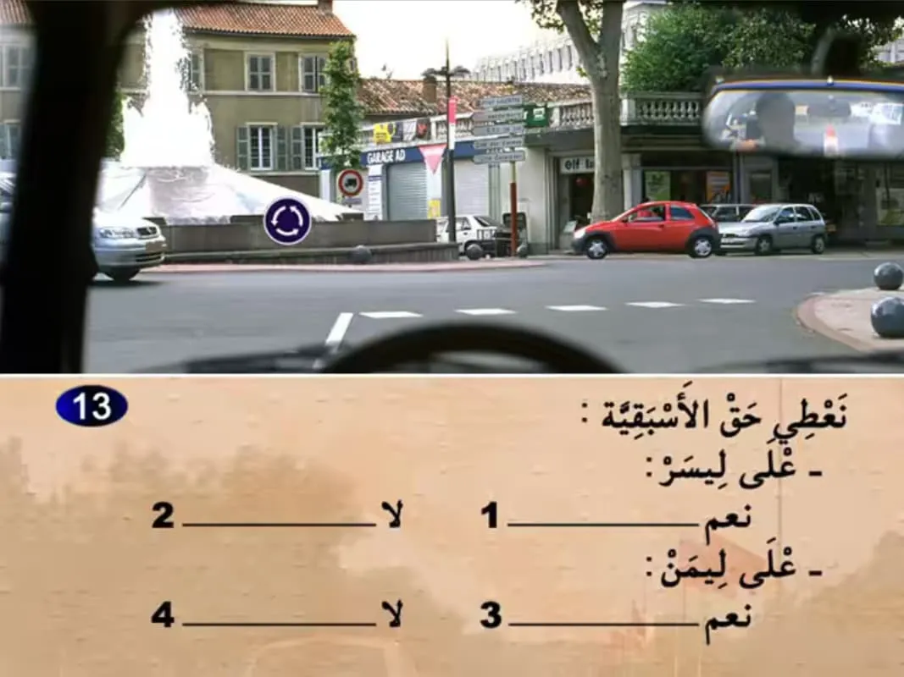
بيّن الجواب
الجواب الصحيح: 1 و 4
في الرومبوان فالأسبقية تكون للعربات القادمة من الجهة اليسرى. في هذه الحالة سوف أعطي الأسبقية للعربات القادمة من اليسار فقط، لا أعطي حق الأسبقية للعربات القادمة من اليمين.
السؤال 14
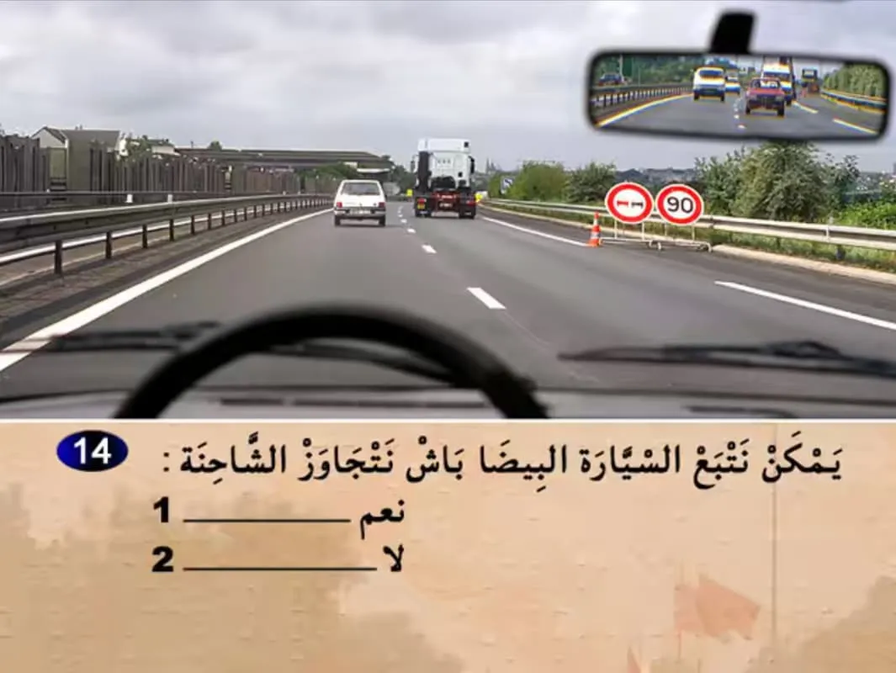
بيّن الجواب
الجواب الصحيح: 2
توجد علامة طرقية عمودية ممنوع التّجاوز، يجب في هذه الحالة السير في المسلك الموجود على اليمين ولا يمكننا إتّباع السيارة لتجاوز الشاحنة.
السؤال 15
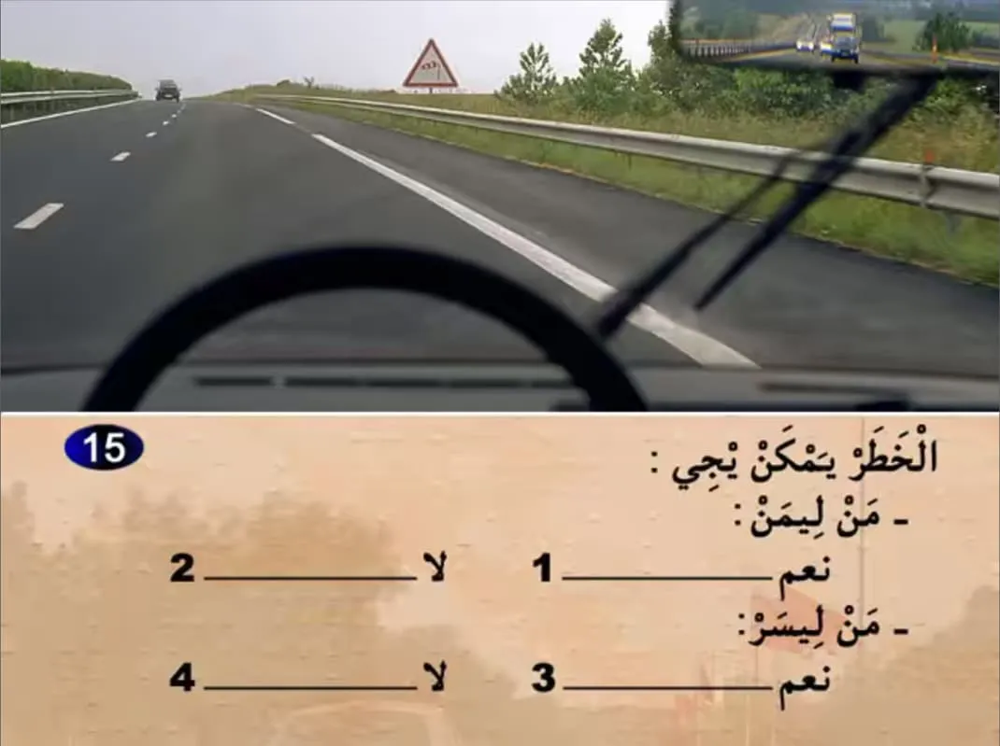
بيّن الجواب
الجواب الصحيح: 1 و 3
بالنسبة للعلامة الطرقية فهي تعني خطر الرياح، بالنسبة لخطر الرياح فيمكن أن يأتي من اليمين وكذلك من اليسار.
السؤال 16
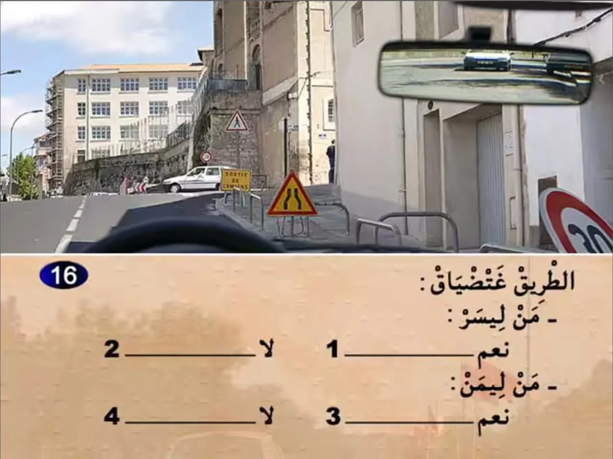
بيّن الجواب
الجواب الصحيح: 1 و 3
بالنسبة للعلامة الطرقية فهي تعني أن الطريق سوف تضياق من الجهتين اليمنى واليسرى.
السؤال 17
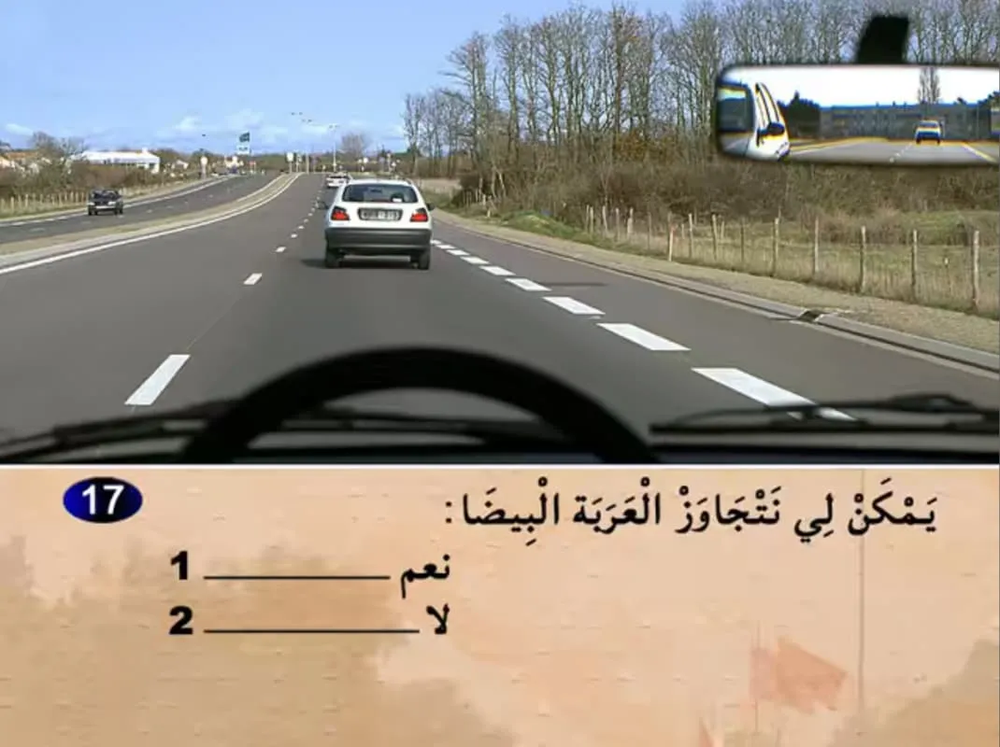
بيّن الجواب
الجواب الصحيح: 2
الخط المتقطّع يسمح لي بالتّجاوز لكن لا يمكنني تجاوز السيارة البيضاء الان لأن هنالك سيارة من الخلف تقوم بعملية التجاوز.
السؤال 18
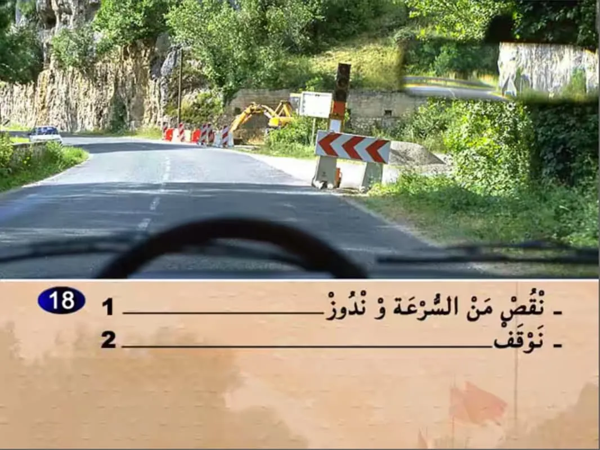
بيّن الجواب
الجواب الصحيح: 1
لا توجد علامة طرقية تجبرني على الوقوف، العلامة الطرقية تعني أن الطريق كتضياق، إذن يجب عليّ التقليل من السرعة والمرور.
السؤال 19
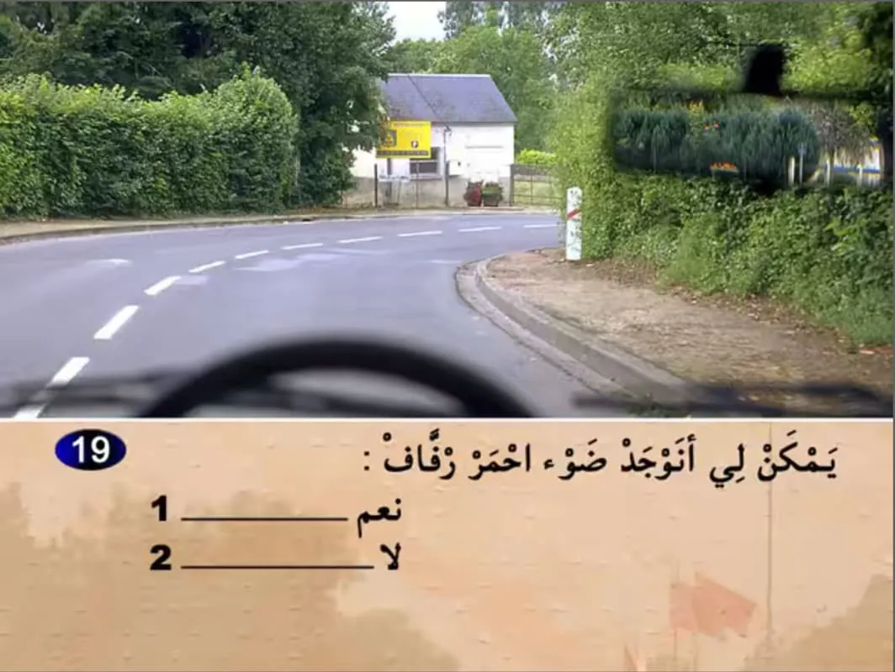
بيّن الجواب
الجواب الصحيح: 1
بالنسبة للعلامة الطرقية (الأرامات) والتي تحتوي على خط أحمر فتشير إلى أنه ممكن أن نجد سكة حديدية مع وجود ضوء أحمر رفاف. (خط أحمر واحد يعني على بعد 50 متر).
السؤال 20
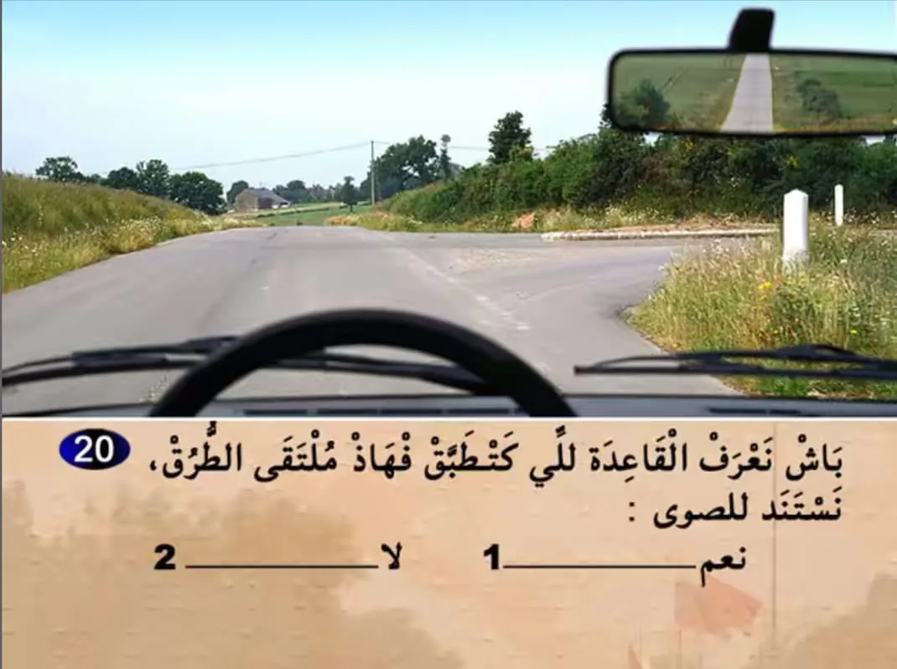
بيّن الجواب
الجواب الصحيح: 2
بالنسبة للصوى تشير فقط إلى ملتقى الطرق وليس للقاعدة العامة التي تطبق في ملتقى الطّرق، إذن الصوى لا تشير إلى قاعدة ملتقى الطرق.
السؤال 21
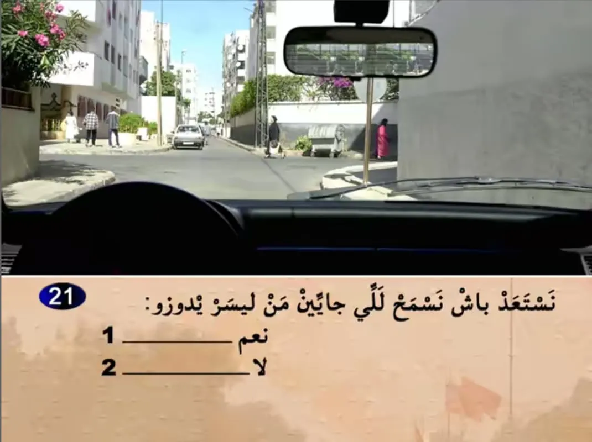
بيّن الجواب
الجواب الصحيح: 2
لا أسمح للعربات القادمة من الجهة اليسرى بالمرور، في ملتقيات أعطي حق الأسبقية للعربات القادمة من الجهة اليمنى.
السؤال 22
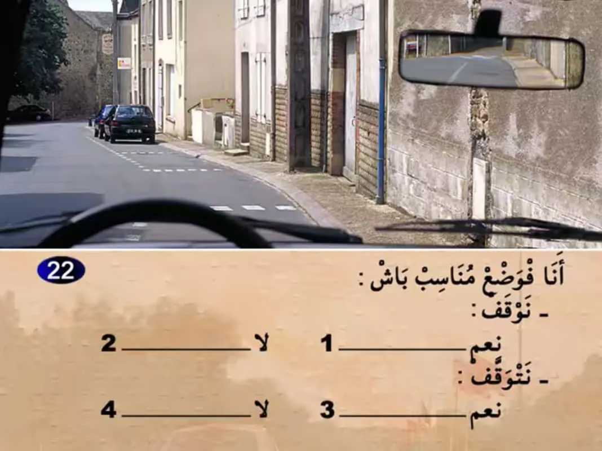
بيّن الجواب
الجواب الصحيح: 1 و 3
لا توجد علامة طرقية تمنعنا من الوقوف والتوقّف، إذن أنا في وضع مناسب للوقوف والتوقّف.
السؤال 23
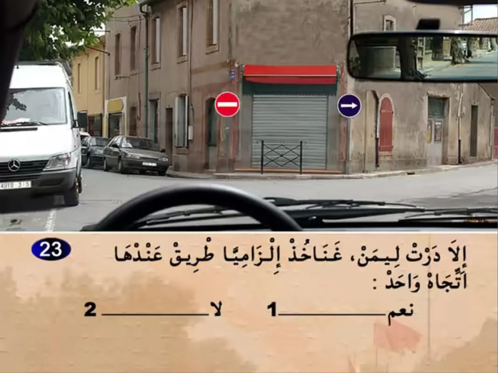
بيّن الجواب
الجواب الصحيح: 2
بالنسبة للعلامة الطرقية فهي تعني منع المرور في تلك الطريق، بالنسبة للعلامة الطرقية الأخرى والتي تحتوي على سهم إلى اليمين، فهي تشير إلى الإجبار للسير إلى اليمين وليس طريق ذات إتّجاه واحد.
السؤال 24
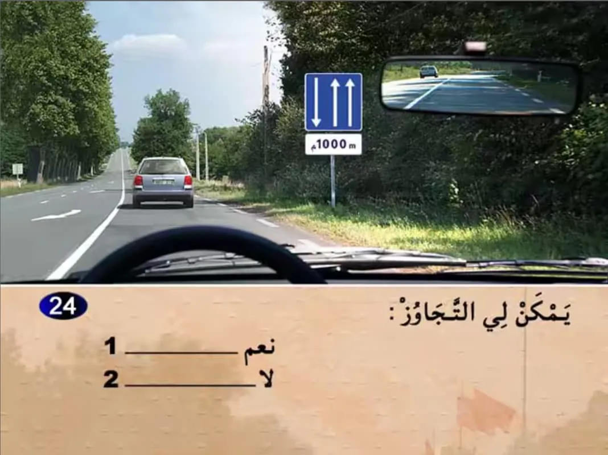
بيّن الجواب
الجواب الصحيح: 2
بعد 1000 متر سوف يصبح لنا مسلكين للسيّر ويمكننا في تلك الحالة التجاوز، لكن الان لا يمكننا التّجاوز لأن التشوير الأفقي الخط المتّصل يمنعنا من عملية التجاوز.
السؤال 25
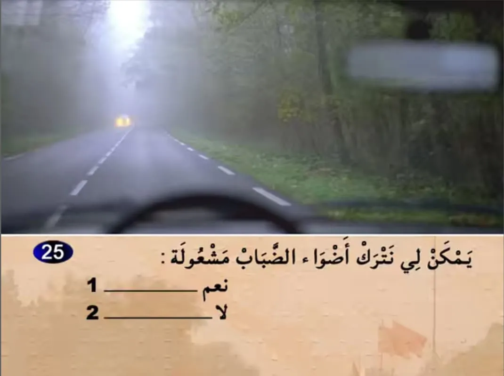
بيّن الجواب
الجواب الصحيح: 1
عندما يكون هنالك ضباب فنقوم بالسيّاقة بأضواء الضباب الأمامية والخلفية، وأضواء التقابل، إذن في هذه الحالة يمكنني ترك أضواء الضباب مشتغلة لأنه يوجد ضباب.
السؤال 26
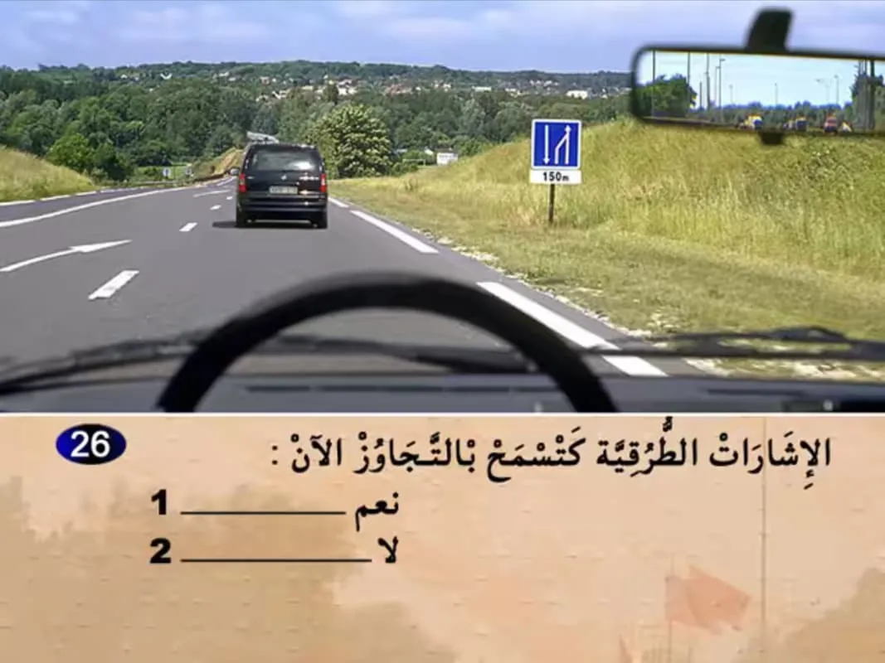
بيّن الجواب
الجواب الصحيح: 2
الإشارة الطّرقية الأفقية وهي السهم المرسوم على الأرض فهي تعني أن الخط المتّصل قريب، وبالنسبة للعلامة الطرقية العمودية تحتوي على مسافة 150 متر، في هذه الحالة غير مسموح لي بالتّجاوز. ( لو كانت 400 متر فيمكنني التجاوز، أقل من 400 متر لا يمكنني التجاوز).
السؤال 27
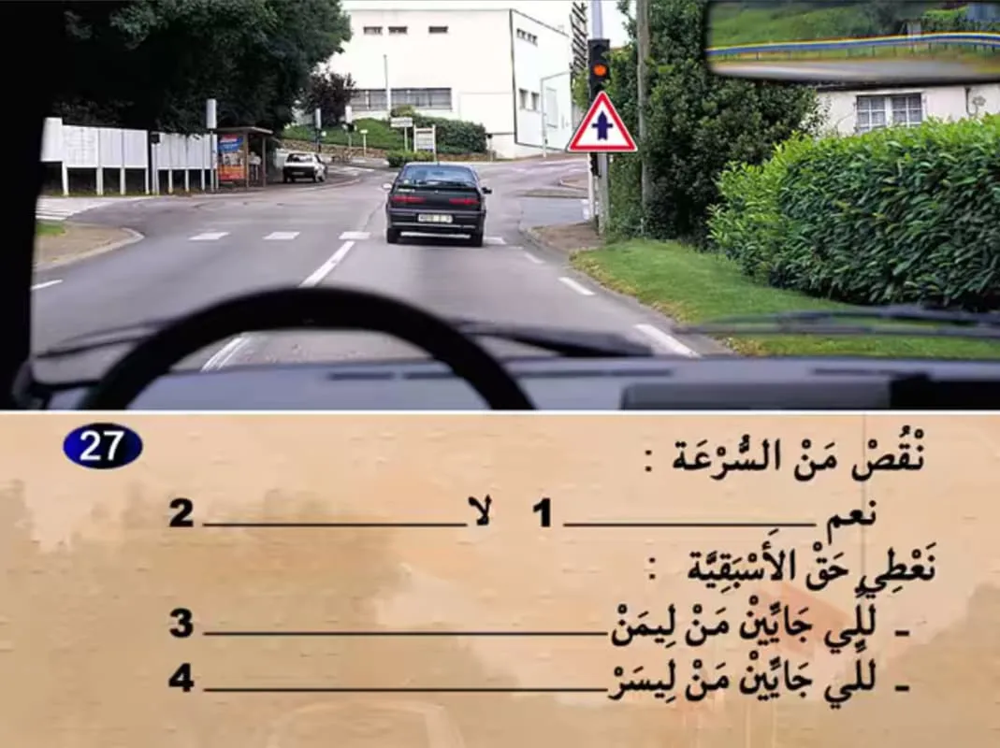
بيّن الجواب
الجواب الصحيح: 1
في ملتقى الطّّرق يجب التخفيف من السرعة، يوجد تشوير ضوئي لون برتقالي رفراف يسمح لي بالمرور وبحذر، والعلامة الطرقية العمودية تشير إلى أنه لديّ حق الأسبقية. إذن في هذه الحالة أنقص من السرعة ولا أعطي حق الأسبقية للعربات القادمة من اليمين واليسار لأن الأسبقية لي.
السؤال 28
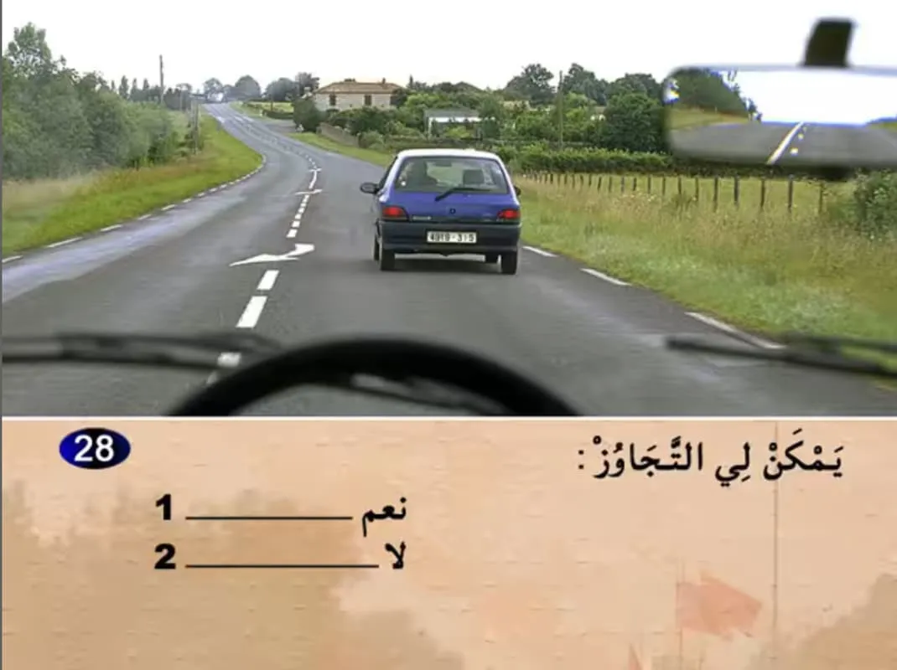
بيّن الجواب
الجواب الصحيح: 1
التشوير الأفقي الخط متقطع يسمح لي بعملية التجاوز، بالنسبة للأسهم المرسومة على الأرض فلا تعنيني فهي تخص السيارات القادمة من الإتجاه المعاكس.
السؤال 29
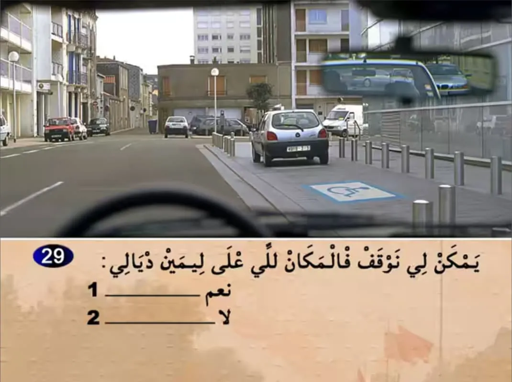
بيّن الجواب
الجواب الصحيح: 2
لا يمكنني الوقوف على اليمين، لأنه توجد علامة تشير على أن المكان خاص بالأشخاص ذوي الإحتياجات الخاصة لذلك لا يمكنني الوقوف فيه.
السؤال 30
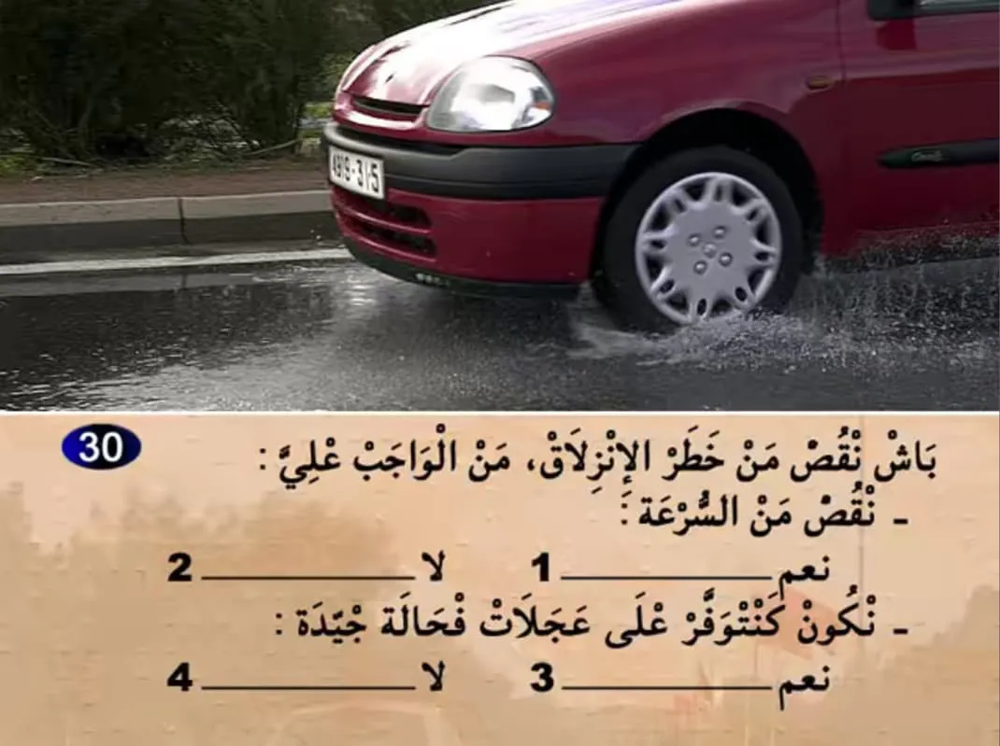
بيّن الجواب
الجواب الصحيح: 1 و 3
تذكير: في المطر فخطر الإنزلاق يزيد كما أن مسافة الأمان تكون أطول ومسافة الحصر كذلك تصبح أطول. في هذه الحالة لكي ننقص من خطر الإنزلاق فيجب علينا الإنقاص من السرعة لأن السرعة سبب من أسباب الإنزلاق، كما يجب علينا التّوفر على عجلات في حالة جيّدة كذلك لتفادي خطر الإنزلاق.
السؤال 31
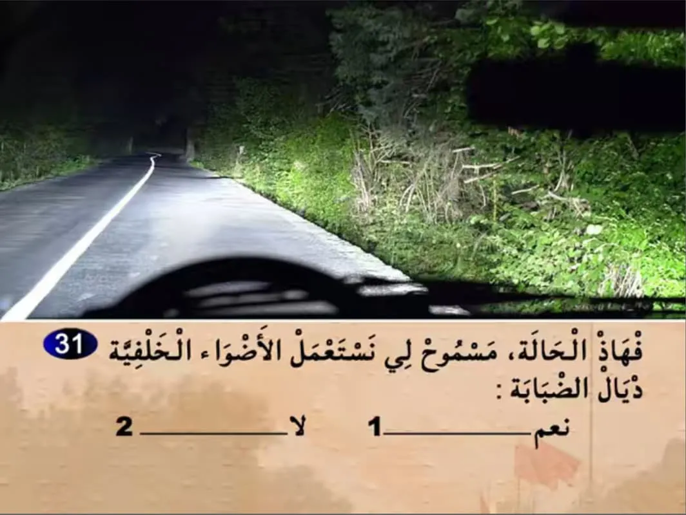
بيّن الجواب
الجواب الصحيح: 2
لا يوجد ضباب، في هذه الحالة لا يمكنني إستعمال أضواء الضباب الخلفية.
السؤال 32
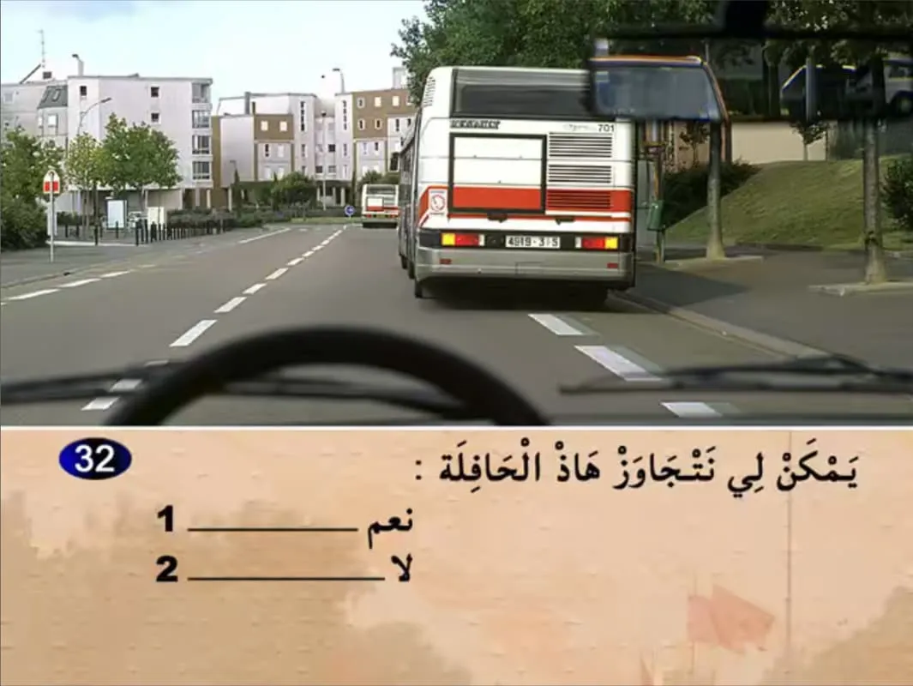
بيّن الجواب
الجواب الصحيح: 1
بالنسبة للحافلة فهي واقفة، وأضواء النجدة الخاصة بها شغّالة، والخط المتقطّع يسمح لنا بالتّجاوز، في هذه الحالة يمكننا التّجاوز.
السؤال 33
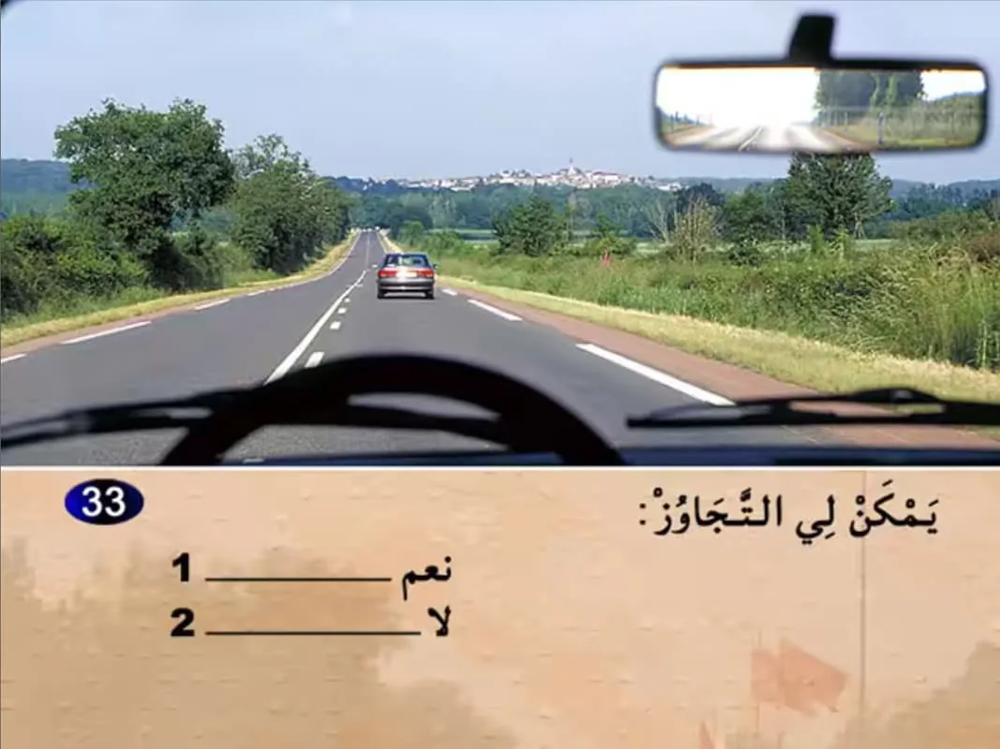
بيّن الجواب
الجواب الصحيح: 1
لا توجد سيارة من خلفي تستعد لتجاوزي، كما أنه لا توجد سيارة قادمة في الإتجاه المعاكس، والتشوير الأفقي أول خط يعنيني فهو الخط المتقطع، إذن يمكنني التجاوز.
السؤال 34
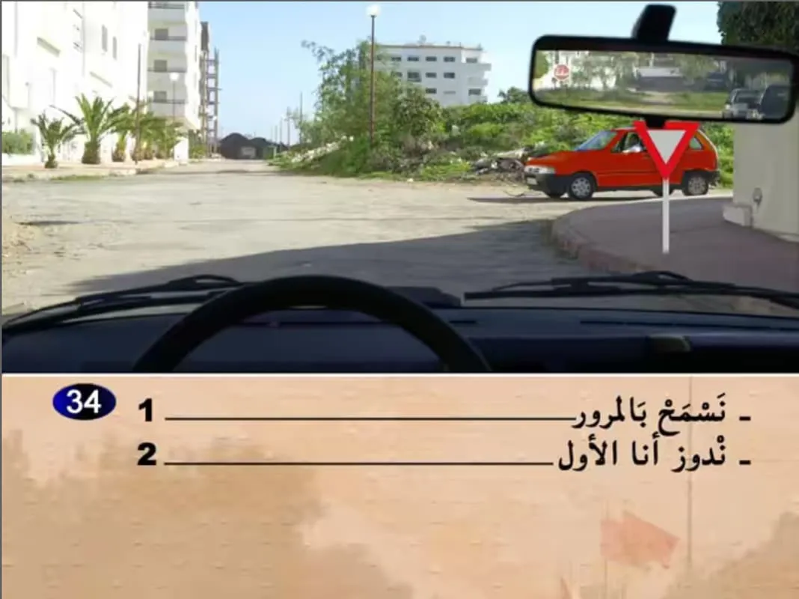
بيّن الجواب
الجواب الصحيح: 1
العلامة الطرقية تعني أنه ليس لدينا حق الأسبقية، إذن أسمح للسيارة بالمرور أولا.
السؤال 35
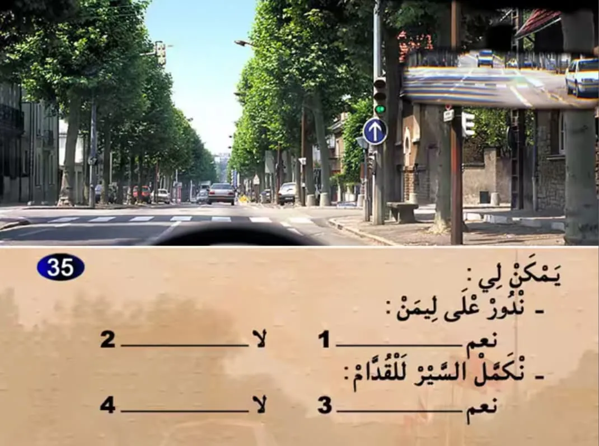
بيّن الجواب
الجواب الصحيح: 2 و 3
في هذه الحالة العلامة الطرقية السهم فهو يجبرني على إكمال السير مباشرة ولا يمكنني أن انعطف إلى اليسار أو اليمين، يمكن لي فقط إكمال السير مباشرة.
السؤال 36
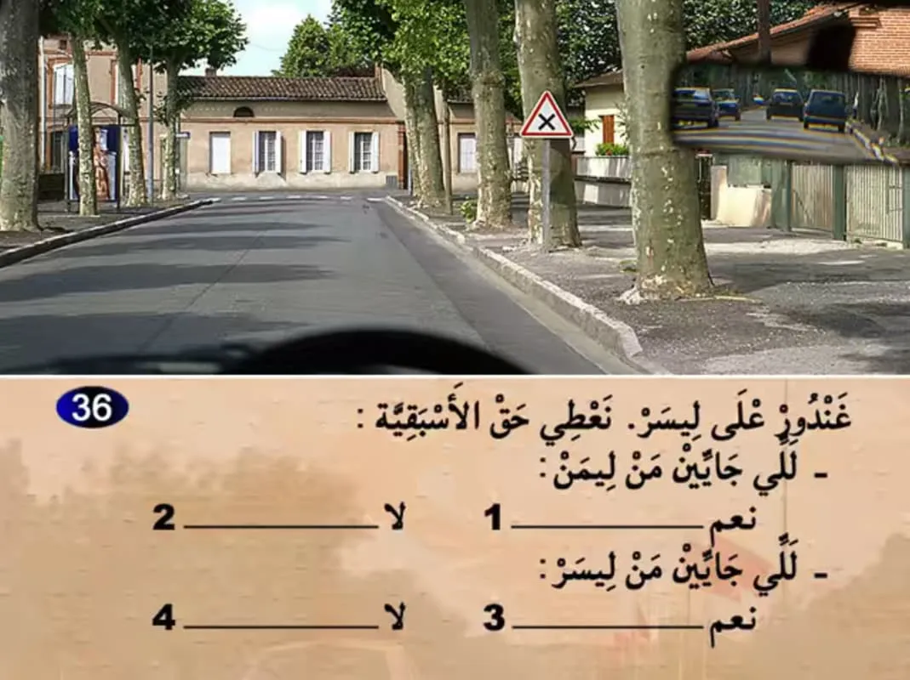
بيّن الجواب
الجواب الصحيح: 1 و 4
بالنسبة للعلامة الطرقية فهي تعني خطر ملتقى الطرق، وفي ملتقيات الطرق عندما لا توجد علامات تنظّم حركة السير أو شرطي مرور ففي هذه الحالة أقوم بإعطاء حق الأسبقية للعربات القادمة من الجهة اليمنى فقط.
السؤال 37
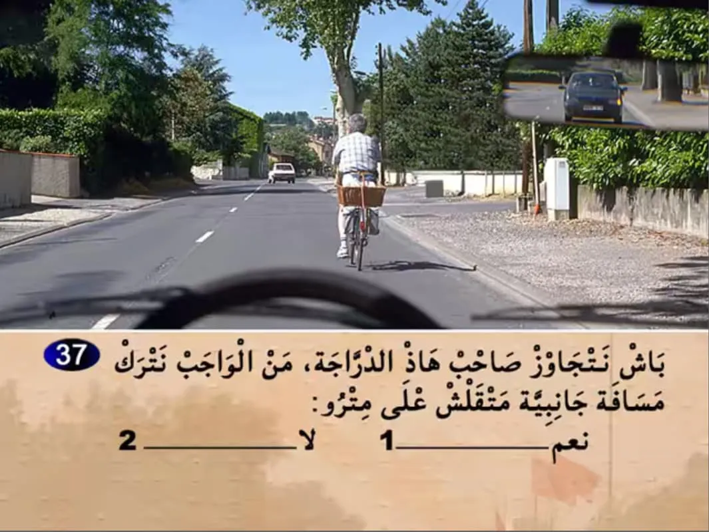
بيّن الجواب
الجواب الصحيح: 1
في هذه الحالة من الواجب عليّ ترك مسافة لا تقل عن متر إذا أردت تجاوز صاحب الدراجة، لكن لا يمكنني في هذه الحالة أصلا أن أتجاوز لأنه ممنوع التجاوز عند الإقتراب من ملتقى الطرق.
السؤال 38
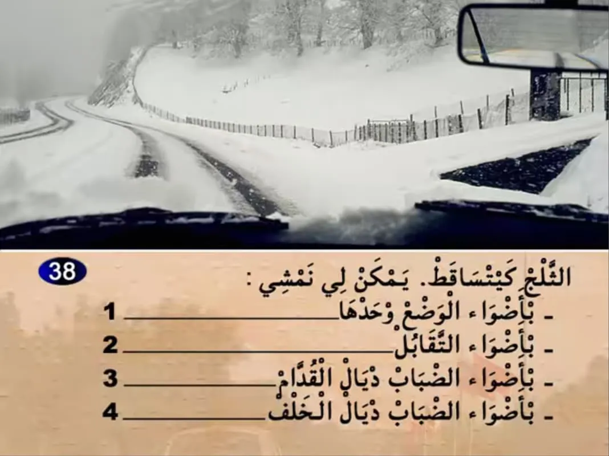
بيّن الجواب
الجواب الصحيح: 2 و 3 و 4
أثناء هطول الثلج، نقوم بالسّير بإستعمال أضواء التّقابل وأضواء الضباب الأمامية وأيضا الخلفية مع إمكانية إستعمال أضواء الوضع أيضا (لكن ليس وحدهم)، لا يمكن إختيار الإختيار الأول أضواء الوضع وحدهم لانه لا يمكننا السير بأضواء الوضع وحدهم، من الواجب في مثل هذه الحالات عندما تكون حالة الطقس صعبة ان نقوم بإستعمال أضواء الوضع مع أضواء التقابل وأضواء الضبابة الأمامية والخلفية، ولا يمكن إستعمال أضواء الوضع وحدهم والسير بهم في مثل هكذا أجواء مُثْلِجَة (لو كان الإختيار أضواء الوضع، بدون كلمة وحدهم فيمكننا إختيارهم) .
⚠️ ملاحظة: يمكن استعمال أضواء الوضع في آن واحد مع أضواء الطريق وأضواء التقابل والأضواء الخاصة بالضباب، ويمكن كذلك استعمالها وحدها عند وقوف المركبة أو توقفها أو عندما تكون ظروف الإنارة على الطرق، ماعدا الطريق السيار أو الطرق ذات المسالك الخاصة. الجواب الصحيح هو رقم 2 و 3 و 4.السؤال 39
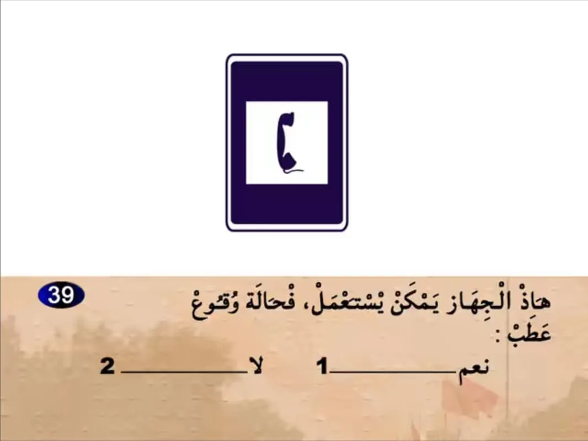
بيّن الجواب
الجواب الصحيح: 1
بالنسبة لهذه العلامة الطرقية الخاصة بالهاتف فنجده في الطريق السّيار، وهو مخصص للطوارئ، إذن في حالة وقوع عطب فيمكنني إستعماله.
السؤال 40
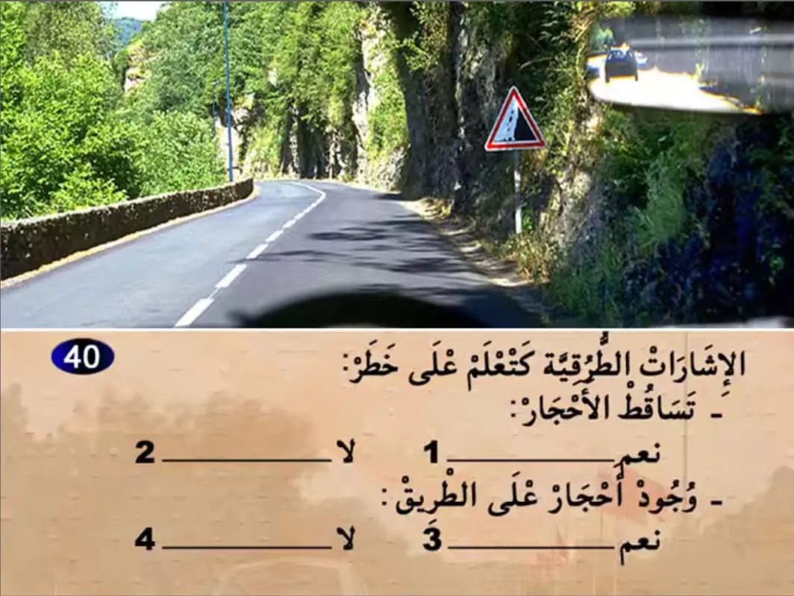
بيّن الجواب
الجواب الصحيح: 1 و 3
بالنسبة للعلامة الطرقية الخاصة بالخطر فهي تشير إلى خطر تساقط الأحجار وكذلك خطر وجود أحجار على الطريق.